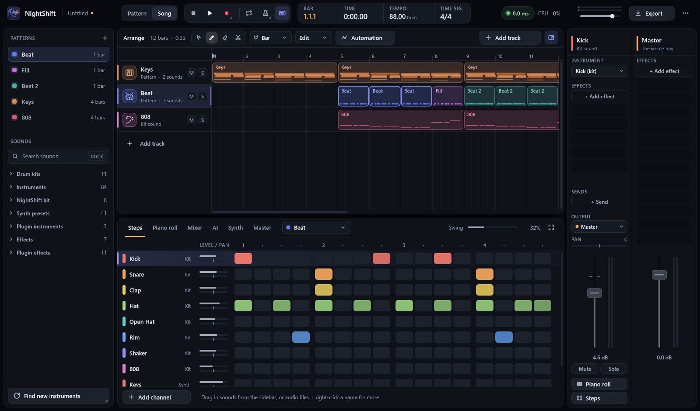

A free DAW for Windows and Mac
NightShift is a music studio for making beats and whole songs: patterns, a step sequencer, a piano roll and a mixer, plus an AI band. Describe the song you hear in your head, and it plays your idea.
The latest version, with the free Lofi, Bass and Drums plugins. All versions

Everything you need to make music
If you've used FL Studio, you'll feel at home: patterns first, then arrange them into a song. It's built for speed and low latency, with text you can read and plain words everywhere.
Patterns and steps
Build beats in the step sequencer, then paint patterns into the playlist to arrange a song.
Piano roll
Draw and edit notes and velocities, with automation lanes and tempo and time-signature changes.
Mixer and effects
Channels, sends and stock effects, plus an amp that loads Neural Amp Modeler captures for guitar and bass.
Sounds included
Nova synth presets and the 808 and 909 kits are built in. Studio drum kits, a grand piano and an orchestra are free, one click away.
Recording
Audio tracks with a count-in, take folders and quick comping, at low latency (ASIO on Windows, Core Audio on Mac).
Plugins and mastering
Load your VST3 instruments and effects (and Audio Units on a Mac). An AI mastering engineer gets your song ready for streaming.
An AI band that plays in your style
Type what you want in plain words. A drummer, bassist, guitarist, keys player and synth player write their parts together: the groove, the chords, the sounds, quiet verses and big choruses. It all runs on your computer, so nothing is sent anywhere.
- Drummergrooves, fills and feel for each style, on the kit that suits it
- Bassistlines that lock to the kick, from 808s to upright
- Guitaristchugs, skanks, chops and boom-chick
- Keysstabs, arpeggios and rich chords on piano, Rhodes and organ
- Synthpads, arps and leads with the right sounds
39 genres and 342 artists, from metal, trap and lofi to house, techno, drum and bass, dubstep, synthwave, reggae, reggaeton, afrobeats, bossa nova, ambient, cinematic and country.
Free plugins in the box
They install with NightShift and work in your other music apps too: VST3 on Windows and Mac, and Audio Units on a Mac.
NightShift Lofi
Cassette · Vinyl · Crush · Haze
Tape saturation and wow, vinyl crackle and warp, sampler crunch and a dreamy haze.
NightShift Bass
Drive · Split
A bass overdrive pedal with a clean blend, and a multiband drive with a cabinet and graphic EQ.
Nightshift Drums
Multi-mic studio kits
Plays DrumGizmo's free studio kits with every microphone and every recorded hit.
Opening it the first time
NightShift isn't signed (that costs money every year), so your computer asks once whether you trust it.
Windows
- Run NightShift-Setup. It installs just for you, with no admin password.
- If Windows says "Windows protected your PC", click More info, then Run anyway.
Mac
- Double-click the NightShift .pkg. When macOS says it can't check it, click Done.
- Open System Settings > Privacy & Security, click Open Anyway by NightShift, and run the installer.